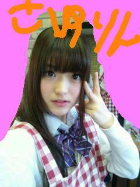

2011/1219Mon夢のまた夢
あぁぁぁぁぁぁぁぁぁぁ（ ＴДＴ）
昨日の乃木坂ってどこ!?を
みられたかたぁぁぁぁぁぁ!!
すみませんんんんんんんm(__)m
ほんまにすみませんんんんんm(__)m
松村さゆりですうううううううう
見逃したかた、みれないって方
何があったのか調べないでぇぇ（つд；*)
ほんまに放送されたくなかったぁ(´；ω；`)
終わったあと
すぐ母に謝罪メールしました。返事がありませんんんんん(´；ω；`)
ママ怒ってるぅ(´；ω；`)？
ごめんなさいーm(__)m
さゆりんお手伝いもしたことあるよー・゜・(つД｀)・゜・
多分一回作ったら
作れる!!……はず…
春巻とチャーハンは
初めてやったんです～(´；ω；`)
だし巻き玉子とか
かき揚げやったらできた!!……はず…
もう言い訳甚だしいですね(T^T)
さゆりん母は
めっちゃ料理うまくて
働き者さんやったので
さゆりんは料理する機会がなくて…
母がいないときは
これまた料理上手で働き者な父が
用意してくれてたので
さゆりんは料理………………うわぁん゜・(つД｀)・゜
何言ってもあかんですよね！ごめんなさいーm(__)m
煮込みハンバーグは
作れますー・゜・(つД｀)・゜・多分
なんてこった～(´；ω；`)
さゆりんは
いつになったら目標の
何でもできるしっかりした女の子☆
になれるんや～(´；ω；`)
まぁさゆりん頑張るー（つд；*)
今日はインフルエンザの予防接種行きましたー！
注射きらいや～(´；ω；`)
いつもは母と行って
母にしがみつきながら
うけててんけど
今年は１人でした(T^T)
頑張った!!泣かんかったよ!!
あっ！
母からメールが…！
よかったー(*´∇｀*)怒ってへんかったよー(*´∇｀*)☆
母が
注射泣かへんかった!?やってo(*⌒―⌒*)o
お母さーん☆
泣かへんかったよー(*´∇｀*)＊
でも頑張ったご褒美に
自分にアイスかったんは
内緒っ☆
コメントありがとうございます(*≧∀≦*)
さゆりんと同じＢ型の方も
多いですねっ♪
家族バラバラの血液型の方もいたり！
Ｏ型さんは誰にでも輸血できるんやっ!
知らなんだっ！！(゜ロ゜ノ)ノ
ってか
家族バラバラの血液型やったら
家族どおしで輸血できやんのかっ!!
Ｏ型さんはおるけどもっ!
さゆりんはＢ型やけど
Ｂ型でよかったと思います♪
理由はないけど!!笑
今日の質問！
好きな色は何色ですか!?
質問お答えします！
さゆりんはクリスマスは
メンバーと過ごせたら
ええなぁと思ってますっ(*^^*)
ほんまは大阪帰ろかな～って
思ってんけど
本音は
イベントで皆様とお会いしたかったです(´；ω；`)
奇数と偶数がわからんのは
さゆりんじゃなくて
まいまいやで～(*^^*)
さゆりんがバラしてもうたｗｗ
こんなまいまいが可愛くて
さゆりんは好きやわ～(*^^*)＊
またネタがあるねんけど
題名にしたら
まいまいに怒られそうやから
いまは内緒♪(ｏ・ω・)ノ))
さゆりんは怒ることあるん？
ん～いらいらしたり
あんましやんかも～(>_<)
なんか常識ないこととか
されたら嫌やけど
あんま怒ったりしやんよ～(>_<)
喧嘩もしやん!!
相手が怒ってる!!って感じたら
すぐに謝ります!!弱っｗｗ
ほなら、皆様も風邪ひかんよう
気ぃつけてください！
奇跡の２ショット！！
後ろにまいやんが☆これ偶々なんですよ！！

さよならりんごっっ(o・・o)/
さゆりんでしたー＼(^_^)(^_^)／



コメント(154)
「抹茶色」じゃなくて
ある日、全身に茶色の服を着てたからです。
乃木どこ見たよ！
見ちゃったよ！
今までの乃木どこで一番笑ったわ(*^^*)
さゆりんおもしれえ(^^)d
でも料理できる女子はやっぱりポイント高いからねぇ～
頑張ってできるようになってや♪
俺もクリスマスにさゆりんにあいたかったあー！！
さゆりんがあんなに料理ができないなんて、ショックや…笑
好きな色は黒白青！
洋服もほとんどこのシンプルな冒険しない感じですｗ
クリスマスさゆりんに会いたかったなぁ…＞＜
でも２２日会いに行きます！
林檎ちゃんのそう言うとこ好き！ますます好きになった！
でも料理は上手な方がいい！笑
いつかはファンにご馳走してね！かき揚げとチャーハンを！
では風邪ひくなよ！
料理が下手でもなぜだか憎めない林檎ちゃんが大好きなもさきちより
ま、料理なんて最初からできるもんじゃないからさ、ゆっくり覚えていけばいいと思うよ(^^)
放送見たよ！
あれは…ｗ((((;゜Д゜)))
で、でも実際はちゃんと料理できるんだよ…ね？ｗ
今からイベントめっちゃ楽しみだよー！
はやく22日にならないかなｗ
好きな色かー
オレンジかな！
部屋にもオレンジなもの結構多いかもｗ
俺はさゆりん推しだからもちろん昨日の料理も食べられる！…はず笑
俺もさゆりんと同じB型だよ！
B型ってなんかいいよね(*´∀｀*)
好きな色は水色と黒！
俺の好きなチームのカラーだよ♪
さゆりんの料理ヤバすぎ(笑)(笑)
料理下手っていう域を越えちゃってる
どんな味なのか食べてみたい(笑)
まだネタあるんだったらぜひタイトルに書いて!!
タイトル見ただけでおもしろいからさ
僕の好きな色は水色かな
でもなぜか持ってるものは緑色が多いし
服は白系が多くなってる……
おやすみ。
俺も前にカレーを作ろうとして「カレーって鍋いっぱいに入ってるよなぁ…」とゆうイメージで水をなみなみと入れて作り始めたら
一向にドロドロしたカレーの感じにならない(T_T)いくら煮込んでもサラサラ(T_T)
３人前くらいのスープカレーが出来上がりました…orz
料理も得意分野とか得手不得手あるからね！気にしない気にしない！(^∀^)ノ
今日の質問の答えは
紫・暗めのピンクですな
AKB48グループ推してても「チームＢいいけど青かぁ…４好きだけど黄かぁ…」てな感じだったけど
まさかの乃木坂46が紫で＼(^^)／まさにテンション高山♪笑
だから握手会とかでもきっと暗めの紫やらピンク系の色を何かしら身につけてると思います(^皿^)
写メのチェックのエプロンがハンパなく似合ってて可愛すぎる!!!
料理の件は忘れてる途中です(沙*･ω･)
さゆりんご♪
お料理拝見しました。
さすがにあれは食べれる自信がないです笑
でもさゆりんごの可愛さに惚れ直しました！！
僕も注射苦手です。受験だからしょうがないですね…
受験の時僕はやらなかったですけど笑
がんばりましたね！試験もその気合いで！
好きな色は紫です。
欲求不満の色らしいです。
でわでわ～ノシ
うん。(=_=;)
見なかったことにでも
しようかなぁ〜(笑)
まぁこれからですよね？
好きな色は赤です！
さゆりんの好きな色は何ですか？
あと、乃木坂
ＣＤデビュー決定と
１人予防接種デビュー(笑)
おめでとうございます＊
12/19の「乃木坂ってどこ」めっちゃわらかしてもらいました。
夜中に笑いすぎで、むすめ起こしてしまったからついでに
一緒に見て大笑い！
「なんでなんよ～」といい「お料理モンスター」といい
さゆりんご、着実にポジションつかんでますよ。
笑ったけど高感度は上がってるからね。
ガンバレー！応援してるからね～！o(⌒―⌒)o
チャーハンに水を笑顔で入れるの最高でした。
（ギョーザと間違ったんちゃう）
乃木どこ？見ました。
ちょー笑いましたw最高の回でしたよーw
さゆりんは、初めて見た時に天然さんかなぁ？と思っていたんですが、
実はしっかりしていたので、天然さんな部分もあると嬉しいなぁと思っていたんです。
そこで「この料理できないキャラ」で、好感度急上昇でしたw
なんか、個人的には、アイドルって料理出来ない方がかわいいなーと思うんですw
しかも、単に料理出来ないだけじゃなく、笑いも意識してて
さすが大阪人やなぁと思いました。
自信に満ちた笑顔もかわいかったですよ～w
注射よく泣かずに頑張ったね～
褒めてあげますwヨシヨシ←
僕の好きな色は黒ですねぇ～。
小学校の家庭科で「黒は痩せて見える」って話を聞いてから
黒を着るのが癖になりました ←女子かっw
あっでも、歴代アニメキャラで好きなのが、ひぐらしの鷹野三四さんと、
ONE PIECEのニコ・ロビンちゃんなので、緑と紫も好きかもです。
特に、紫は、乃木坂カラーでもあるので、最近は凄く好きですねー。
さゆりんは、ピンクでしたっけ？
それでは、レッスンなど頑張ってください。
また、ブログの更新楽しみにしています。
追記
当たり前のことすぎて書いてなかったんですが、
BOMBとかCDデータとか買ってますしね～w
一人で大笑いさせて頂きましたｗｗ
五目チャーハンは衝撃映像ですねｗ
あのおかげで食欲が無くなったのでよかったです(￣∀￣)
ちょうど誘惑に負けて夜食を食べそうになっていたのでｗ
親がしっかりしてるとどうしても頼っちゃいますよね
自立しなきゃいけないと思いつつ結局頼ってます…ｗ
さゆりんがしっかりした女の子になれるようにこれからも応援していきます(*ﾟ∀ﾟ)
好きな色は青です(｀・ω・´)
僕でもチャーハンなら作れますよ
来年成人なんですから頑張りましょうね
まあ、反省してるので良いですけど
僕は注射大丈夫なんですよね
率先して献血してます(ドヤッ
初めてコメントします。
いつもいくちゃんの所にコメントしてるんだけど
こないだの番組見てさゆりんのファンになってしまったー(の´ｖ`の)
可愛い顔でニコニコしながらゲテモノつくるさゆりんがもう可愛くて可愛くて
お味噌汁とかから料理頑張って笑
さゆりん・・・orz
可愛いからゆるｽ・・しません
注射嫌いとか可愛い
ご褒美にアイスとか可愛い(*^^*)
俺はオレンジ色好き(*^^*)
まぁー料理は上手いとは言えなかったけど一生懸命やってて良かっと思う( ´艸｀)
好きな色は 紫 と 橙 かな～
乃木どこクッキングもちろん見たよおおおおお
さゆりんのエプロン姿がほんま可愛かったわ～～
お料理は最近はクックパッドとかネットで勉強すればすぐ上達するなりよ
ママりんごも優しいね♪
ぜひ煮込みハンバーグ食べた～い
好きな色は情熱の赤！！
さゆりんピンク好きって言ってたからコンベンションの時はピンクのサイリウム振ってたよ
デビュー日決まって忙しくなるけど体調に気をつけ頑張ってくださいね♪♪
さゆりんめっちゃ大好きー♪ おやすみなさゆりん♪
女子力アップ頑張りましょう
さゆりんみたいに顔が可愛くて大阪弁でお料理が上手だったら
さゆりんパーフェクトだよ
ファン増大かも
乃木坂イベントで北海道くることあったら
ぜひ旭川に来て
待っちょるよ～
北国のアマチュアDJより
でも逆に可愛いなぁって思っちゃいました！あとｸｯｷﾝｸﾞﾓﾝｽﾀｰって名前かっこいいですｗ料理は練習すればうまくなるはずです…たぶん(・・;)
あと質問コーナーの好きな色ってやつ答えてないようなぁ(^ー^;)逆に気になるんですが作成ですか！？ぜひ教えて欲しいです。最初に質問した方のためにもぉ(⌒0⌒)／
好きな色は緑です
蛍光色だとなおよしですね
もちろん見ましたよb
あれは、笑い過ぎて腹が痛かったですO(≧∇≦)o
いろいろと頑張ってください♪
煮込みハンバーグは作れますー
って、嘘やろ？？
さゆりんが作ったら、違うものが出来ると思います。
たぶん・・・(^_^;)
予防接種、ひとりで頑張ったね。
偉い偉い！
乃木坂ってどこの料理は…凄過ぎたね
中々出来るもんじゃないよ
やってTryとかに出てる娘たちもダメな料理があったりするからまあ、OKやないの
でも、料理の『さしすせそ』は、分かるかな？
基本的に、これを間違わなければ味はまあまあにはなるはずだよ
TV的にはおいしい展開で逆に正解かも
負けるな！さゆりんごーー
今度までに、りんご料理を一つ作れるようにしておくといいんじゃない
では～～
人間だから
怒るときだって
あるよね(^^)!!
そして、乃木どこ
何回見てもおもしろいです!
食事中にはみれないけど…。
でも炒飯は
胡椒の量が適量だったら
まだどうにかなったかもしれないね!
と料理ができない俺が言ってみました(笑)
さゆりんの料理は
少し…いやだいぶビックリした(笑)(ﾉД`)
でもかわいかったから
なんの問題もなかった(≧Д≦)
１回さゆりんの手作り料理
食べてみたいなぁヽ(^0^)ﾉ
予防接種全然行ってないなぁ(´Д｀)
むしろ怖くて行けない(´･ω･`)
さゆりん尊敬(*'▽'*)
好きな色はワインレッドだな(^0^)
ここで質問～(^^)/
さゆりんはどんなゲームが好きなの？？(ﾟ∀ﾟ)
ってことでおやすみぃ(*ﾟ▽ﾟ)ﾉ
昨日の、乃木どこ？見たよ
色々とびっくりしてしまって、五目チャーハンのほうは、見た目が…途中から笑えなかったよでも、大丈夫だよ、これから少しずつ料理出来るようになれば
自分は実家住まいだから、さゆりんの気持ちわかるし、たぶんさゆりんと同じ事になると思う
さゆりん注射嫌いなんだ、自分も嫌いで唯一大丈夫なのはツベルクリンのだけ…
泣かずに注射受けれて頑張ったんだね
好きな色は、青色が好きだよ
イベントで握手出来るの楽しみにしてます
さゆりん料理(・ω・)
おもろかったでー！
俺のが料理うまいわー(*´∇｀*)
教えたろかー？？笑
注射いたいよな(´・д・｀)
俺も嫌いやねん…
もう片方の手つねって我慢してたし!笑
さゆりんと握手したいー…けど大学あるから22日行けへんからしょんぼりなう(・ω・｀=)
よろしくお願いしますm(__)m
制限時間あって、しかも五目とか言われると混乱するよね…
ちなみに好きな色は黒です♪
何色を混ぜても色が変わりにくい頑固さが好き(笑)
乃木坂ってどこ？いつも通り見ましたけど料理が出来なくたって全然可愛くて大好きです(//ω//）
だからそんなに気にしなくても大丈夫だと思いますよ(^-^)
それと僕も注射苦手です(>__<)
でも体に気を付けていい１日を送ってくださいね！
ではでは！(*^_^*)
さゆりん大好き！
み、見てはいけない物を見てしまったぁ(笑)
さゆりんは料理が苦手だったんですね｡
まぁ､初めて料理する品をレシピ無しで作るのは､誰でも難しいと思うので､あまり気にしないでくださいね
それよりも､来年2月22日のCDデビューおめでとうございます。待ちに待ったデビュー｡楽しみにしています
誰に何を言われようとも､今やるべき事を見失わず､自分を信じてガンバッテください(^^)さゆりんなら大丈夫｡陰ながら応援しています｡これからも､素敵な笑顔を見せて下さいね
さゆりんて、ほんと可愛いね。
顔だけじゃなく、性格というか・・・そう気質も。
ちょっと褒め過ぎカナ?
でも、記事読んでて、ふとそう思いました。
料理は、作る機会増えれば自然と美味くなりますよ!
勿論、生来の味オンチでなければの話ですけど・・・
風邪・怪我等に気をつけて!
微力ながら応援してるよ!
こんばんは(^^)
お疲れさまです☆
乃木どこ観たよ(^-^)/
爆笑やった（￣∀￣）
長生きできるわ〜って実感するぐらい
笑わしてもらいました
料理上手で働き者って
エェお父さんですね〜
俺の父親も母親がおらんときは
なんやかんや作ってくれてましたけど
そん中でも肉じゃがは
母親のよりも美味しかったです(o^o^o)
この前久しぶりに作ってもらったら
ちょっと失敗してましたけど(^_^;)
さゆりんも料理上手でステキな
二人のDNA受け継いどんやから
経験積んだら上手くなりますよ(^_^)/~~
ってか、俺も作ったことない料理
作れって言われたら
絶対グダグダなる思います(^^;;
予防接種したからって
油断したらあきませんよ
好きな色は赤色です
小学生ぐらいまでは
赤色＝女の子
みたいな抵抗がなんかありましたけど
今はめっちゃ好きですね(^^)
また長文すいません(>_<)
以前『伊東家の食卓』って番組でやってた裏技なんですが、
空いた牛乳パックにご飯と溶いた卵と具材入れてシェイクしてから、
フライパン(もちろん油は少量だよww)で炒めたら上手に出来ますよ♪
ってか今頃気づいたんだけど、
前回の日記にコメントするの忘れてた!!
ホントごめんなさい。。。
今更だけど、自分の血液型はO型です。
家族構成は、
父親様と母親様、
自分(長男)と、2コ下の弟(さゆりんと同い年!!) です!!
あの料理は
正直爆笑wwww
むしろ
俺のがうまい
ドヤ
さゆりって
絶対怒らなそうだもんね（笑）
怒るイメージぜろ！！
すっごく
いい子そうだもん
って
タメの俺に言われちゃうところwwww
ちなみにすきな色は
白です( ´ ▽ ` )ﾉ
理由は
何もかもゼロだから！！！
自分色にも変えられるし
そのまんまの君でもいいからな
「乃木坂って、どこ？」を見て衝撃を受けたので初コメントしてみました（笑）
ちなみにずっと読むだけやったから、全メンバーの中でも初コメントです☆
同じ関西出身で親近感も湧くし、料理が上手くなった姿も
見てみたいからさゆりん推してみよかな♪
あ、好きな色はワインレッドやで〜！
おもしろかったよ
テレビで取り上げられるタレント性も才能！
乃木どこ………
……
…
見ちゃったよｗｗ
さゆりんには申し訳ないけど笑わしてもらった(笑)
でも一生懸命やるさゆりんは素敵やったで
俺は料理結構得意やから一緒に料理したいな〜と思ったｳﾌﾌ←
まぁ春巻とか難しいよね
しゃーないしゃーない
これからも頑張れさゆりん
ではでは バイバイ(･ω･)ﾉｼ
さゆり～んっ(*･ω･*)♪♪
昨日の乃木坂ってどこ？
もちろん見ましたあぁあ！！
私はむしろさゆりんが
いっぱいうつってて
めっちゃ嬉しかったです☆←
でもさゆりん春巻きのは
色とかめっちゃ
綺麗でしたよっ(бвб)♪
私さゆりんの１こ下ですが
私も料理苦手ですｏｒｚ
好きな色は…黒と白と
白が混ざってそうなピンクと
赤が好きです｀・ω・´多っ
さゆりんは好きな色
なんですか⊂(^ω^)⊃？
＼(∵)／ぴょんりさより
まぁ確かに料理は失敗することもあれば、
成功することもある！
ドンマイ(*ﾟ▽ﾟ)ﾉ
クリスマスは22日と24日が仕事。
今年もお客さんと「メリークリスマス」やな…
好きな色は青空の青！
見ていて落ち着く。(´▽｀)
ps.デビュー曲の選抜って、やっぱあるん？
さゆり～んっ(*･ω･*)♪♪
昨日の乃木坂ってどこ？
もちろん見ましたあぁあ！！
私はむしろさゆりんが
いっぱいうつってて
めっちゃ嬉しかったです☆←
でもさゆりん春巻きのは
色とかめっちゃ
綺麗でしたよっ(бвб)♪
私さゆりんの１こ下ですが
私も料理苦手ですｏｒｚ
好きな色は…黒と白と
白が混ざってそうなピンクと
赤が好きです｀・ω・´多っ
さゆりんは好きな色
なんですか⊂(^ω^)⊃？
＼(∵)／ぴょんりさより
乃木どこ見たよ！！！
いや、すこがったね▽･ｗ･▽▽･ｗ･▽▽･ｗ･▽
もうすこがったね！
でもちょっとずつ出来るようになればいいからね（●＾o＾●）
正直もうやめて～って思いながら楽しんでましたwww
料理は不得手ながらチャーハンは得意なもんで
思わず画面見ながらツっこんでたわwww
好きな色は緑色なんだけど、自分の所有した車やバイクでは
一度も無いのである(^^;
コメントする